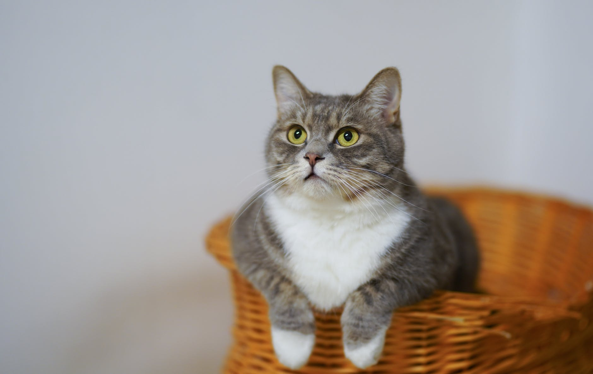

Stories From Our Patients
Some of our patients have agreed to have their stories written about. If you are feeling unsure about our service then please take a minute to read about what they have gone through and how they are doing now.

Snippy is the beloved cat of Edna Cayford, a driver for horse-drawn carriages in Stanley Park. A short while ago, Snippy's appetite changed dramatically, and he began losing weight rapidly. Concerned, Edna brought Snippy to our clinic for an evaluation. After a thorough examination, we diagnosed Snippy with diabetes. Catching it early was crucial, as it allowed us to start a treatment plan promptly. With dedicated care and regular insulin injections, Snippy's health has improved significantly. Despite facing this challenge, Snippy remains an active and cherished member of Edna's family.